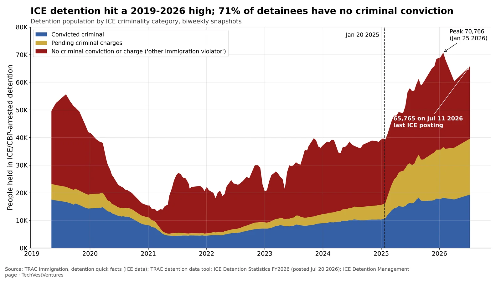
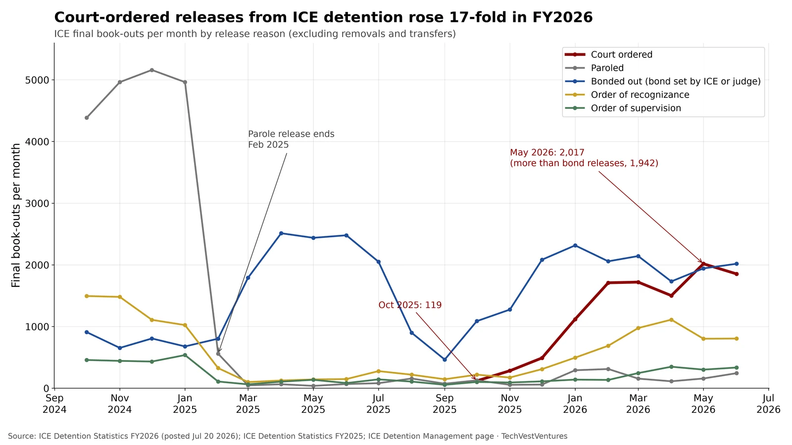

Q10. Detention

People held in ICE detention by criminal status, from ICE's biweekly statistics as compiled by TRAC (155 snapshots, May 2019 to Jul 11, 2026). Detention rose from 39,703 just before Jan 20, 2025 to a peak of 70,766 on Jan 25, 2026. On Jul 11, 2026, 19,329 of 65,765 (29%) had a criminal conviction; 20,247 had pending charges and 26,189 (40%) had neither.
- Before Jan 20 2025 (Jan 12 2025): convicted 10,494, pending 5,360, neither 23,849.
- Latest (Jul 11 2026): convicted 19,329, pending 20,247, neither 26,189. The 'pending charges' group grew about 3.8x, the fastest of the three.
- Transparency gap: ICE's last FY2026 detention spreadsheet is dated Jul 20, 2026; no newer figures had been posted as of Nov 1, 2026.
Note: The administration's case is that people arrested without convictions are still removable and that pending-charge detainees are criminal suspects. Critics point to the 'neither' group as evidence that enforcement is not focused on criminals. The chart shows both readings: the convicted count has also risen, but more slowly than the total.
Sources: TRAC Immigration, detention quick facts (ICE data) TRAC detention data tool ICE Detention Statistics FY2026 (posted Jul 20 2026) ICE Detention Management page

ICE final book-outs from detention by release reason, monthly, Oct 2024 to Jun 2026 (Jul 2026 is a partial month and is left out). Parole releases, about 5,000 a month in late 2024, fell to near zero from February 2025. In FY2026 ICE added a new 'Court Ordered' category: 119 releases in Oct 2025, rising to 2,017 in May 2026, more than the 1,942 released on bond that month. FY2026 through Jul 20: 11,541 court-ordered releases.
- The great majority of book-outs are removals ('Release to Remove'): 27,679 in Jun 2026, against 1,853 court-ordered releases.
- Court-ordered releases by criminality, FY2026 to Jul 20: 2,358 convicted, 2,327 pending charges, 6,856 neither.
- FY2025 has no 'Court Ordered' row, so earlier court releases may sit in other categories; the rise within FY2026 (Oct to May, about 17x) is the comparable signal.
Note: Data stop at Jul 20, 2026, the last ICE spreadsheet. Whether court-ordered releases kept rising after July is unknown.
Sources: ICE Detention Statistics FY2026 (posted Jul 20 2026) ICE Detention Statistics FY2025 ICE Detention Management page